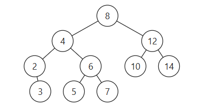
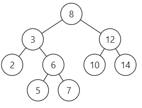

二叉树相关题解合集
目录
二叉树中序遍历(迭代) 位运算结合折半查找计算完全二叉树的节点个数 已知中序后序构造二叉树 二叉搜索树中的众数 查找最近公共父节点 avl树平衡二叉树
前言
二叉树的单个节点结构如下， 1
2
3
4
5
6
7
8
9
//Definition for a binary tree node.
struct TreeNode {
int val;
TreeNode *left;
TreeNode *right;
TreeNode(int x) : val(x), left(NULL), right(NULL) {}
};迭代和递归两大类型。而遍历的顺序以前序、中序、后序、层序最为重要。
在算法设计中首要考虑需要实现的功能使用哪一种遍历方式最为合适、如：寻找公共祖先时因为需要先找到两个子节点，然后两个子节点自下而上寻找父节点、所以后序序列左右中更为合适。在二叉搜索树中节点的左子树中的所有值都小于节点的值，而节点的值一定小于右子树中的所有值，所以利用二叉搜索树的性质，中序序列左中右遍历得到的结果就是一个递增序列。
递归遍历的算法设计中需要做好三步：
- 确定递归函数的返回值是什么，是节点、值亦或者是布尔类型？
- 确定递归停止的条件。
- 详细设计单层递归中需要处理什么事情。
二叉树中序遍历(迭代)
如果使用cur->left == nullptr && cur->right == nullptr
去判定到达叶子节点会出现当前操作的节点并没有入栈，不会讲这个节点弹出，后面再次向左搜索还会访问它形成死循环。
这种做法cur != nullptr,当访问完左子树回来访问更上层的节点时cur不会被while语句赋值，就会跳过向下搜索的过程直接向右子树搜索。
神奇！！！ 1
2
3
4
5
6
7
8
9
10
11
12
13
14
15
16
17
18
19
20
21
22
23
24class Solution {
public:
vector<int> inorderTraversal(TreeNode* root) {
vector<int> result;
stack<TreeNode*> st;
//cur 表示当前操作的元素，它在操作完成之后才会入栈
TreeNode * cur = root;
while(!st.empty() || cur != nullptr) {
while(cur != nullptr) {
st.push(cur);
cur = cur->left;
}
//cur 指向已经入栈的叶子节点
cur = st.top();
st.pop();
result.push_back(cur->val);
// 转向右子树
cur = cur->right;
}
return result;
}
};
位运算结合折半查找计算完全二叉树的节点个数
完全二叉树的节点个数在
完全二叉树节点的位置与其节点编号(从1开始)的二进制表示有如下的联系：
每个节点的编号的二进制表示直接对应从根到该节点的路径：
- 最高位（第 1 位） 始终为1，表示根节点。
- 从第 2 位开始的每一位 表示路径方向：
- 0 表示向左走（左子树）。
- 1 表示向右走（右子树）。
1 | 110 (6) |
1 | class Solution { |
在折半查找（二分查找）中，mid的计算方式通常有两种：
向下取整：mid = (L + R) / 2 或
mid = L + (R - L) / 2
向上取整：mid = (L + R + 1) / 2 或
mid = L + (R - L + 1) / 2
使用 (L + R + 1) / 2
的目的是为了向上取整，这在某些特定场景下是必要的。下面详细解释：
为什么需要向上取整？ 在二分查找中，当区间 [L, R]
包含偶数个元素时，中间位置有两个选择：左中间点和右中间点。例如：
数组 [1, 2, 3, 4] 中，L=0, R=3，中间位置可以是 1（左中间）或 2（右中间）。
选择右中间点（向上取整）的常见场景：
避免死循环：当R = L + 1时，若使用向下取整且更新规则为
L = mid，会导致 L 无法更新，陷入死循环。
特定问题的边界处理：如查找最后一个满足条件的元素（右边界）。
已知中序后序构造二叉树
这里牵扯二分，C++中有一个很重要的概念，即，vector的节选是一个左臂右开区间
[0, MaxIndex)
inOrder:[0, 2, 1, 3, 4, 5, 6, 8, 9, 11]
postOrder:[0, 1, 3, 5, 4, 2, 11, 9, 8, 6]
1 | 6 |
根据二叉树后序和中序的性质，我们可以知道： 1.
后序的最后一个是树的根节点 2.
中序序列中根节点的左侧是树的左子树的节点[0, 2, 1, 3, 4, 5]，中序序列根节点右侧是右子树的节点[ 8, 9, 11]
3.
得知中序序列中的左右子树的节点个数以后我们也可以在后序序列中划分出左右子树,
1.
其中左子树是后序序列中的前六个(同中序序列)[0, 1, 3, 5, 4, 2]
2.
其中右子树的后序序列是除了前六个和最后一个的剩余元素即[11, 9, 8]
由此我们可以使用递归的方法去构造各个节点。
1 | TreeNode * traversal(vector<int>& inorder, vector<int>& postorder){ |
二叉搜索树中的众数
二叉搜索树是一个有序树,定义如下： 1. 若它的左子树不空，则左子树上所有结点的值均小于它的根结点的值； 2. 若它的右子树不空，则右子树上所有结点的值均大于它的根结点的值； 3. 它的左、右子树也分别为二叉排序树
二叉搜索树按照中序遍历得到的结果就是一个从大到小的排序，最简单的思路就是将这个有序序列存放在数组中然后遍历两边数组得到众数的集合。
第二种思路略微复杂，但相当高效。在中序遍历树的同时判断该该节点对应的值是否是众数。
递归遍历二叉树的时候我们可以创建全局变量来记录遍历过程中的中间变量，如：
1 | private: |
要做的事情大致分为三个部分
- 中序遍历
1 | void searchBST(TreeNode* cur) { |
- 保存pre用以记录过程
1 | //处理第一个节点 |
- 判断节点是否为众数，并更新
ans
1 | if(count == maxCount ) ans.push_back(cur->val); |
查找最近公共父节点
查找父节点很容易就能相当自下向上找，符合这一顺序的遍历方式为后序遍历。我们首先要做的事情是找到目标节点，然后向上传递，找到两个节点的公共祖先节点。
需要递归函数返回值，来告诉我们是否找到节点q或者p，那么返回值为bool类型就可以了。 但我们还要返回最近公共节点，可以利⽤上题⽬中返回值是TreeNode * ，那么如果遇到p或者q，就把q或者p返 回，返回值不为空，就说明找到了q或者p。
1 | TreeNode* seacrhNode(TreeNode* root, TreeNode* p, TreeNode* q) { |
再向上传递信息的过程中，应当如何来保存信息呢？
当遍历到一个非目标节点时，该节点的左右子树遍历得到的情况要么是得到空指针，要么就是找到了p，q节点。
如果这个节点接收到的左右子树都不为空，则说明肯定是一个p，一个q。找到了两个目标节点，正好它是这两个子树的公共祖先节点。此时就不再需要传递p，或q要告诉祖先节点找到了目标节点。这个节点本身就是我们要找的点。因此将返回值改为该节点本身即return root;
如果只有p,q中的一个就继续将p,q向上传递说明其找到了其中的一个节点或者该节点就是公共节点，直接将非空的节点向上传递。
而左右子树的返回值都不存在则说明这个节点并不是p或q的任意一个节点的祖先
1 | if(left != NULL && right != NULL) return root; |
删除二叉树的节点
教材上给出的传统做法为以下方法：
- 如果要删除的元素不存在则什么也不做。
- 如果要删除的元素只有左子树或者右子树则用左子树/右子树的第一个节点代替要删除的节点。
- 要删除的元素既有左子树又有右子树，这种情况较为复杂，书中给的方法是使用它的直接前驱或者后继来替换它。
如下： 现在假设我们要删除节点4 
删除后的二叉树： 
我们使用节点4的直接前驱3来代替了它，使它仍然为一个二叉搜索树。在这种情况下一个节点的直接前驱为它的左孩子的最右孩子(直到某个节点的右孩子为空)
这种做法理论上很简单，但实际操作一起来会相当复杂，因为不仅要找到这个节点，要删除这个节点和它的前驱的连接还需要知道其前驱的指针，这要么需要遍历两遍，要么就得使用双指针，显然会很麻烦
但还有另一个办法,删除4号节点，让他的右孩子来替代它，而它的左子树移接到它的直接后继的左子树上。这样避免了对直接后继(前驱)进行删除。不再需要使用双指针或者遍历两次。
1 | // 最复杂的情况。 |
AVL树(平衡二叉树)
平衡二叉树是一颗空树，或者具有以下性质的二叉排序树：它的左子树和左子树的高度之差(平衡因子)的绝对值不超过1，且它的左子树和右子树都是一颗平衡二叉树。